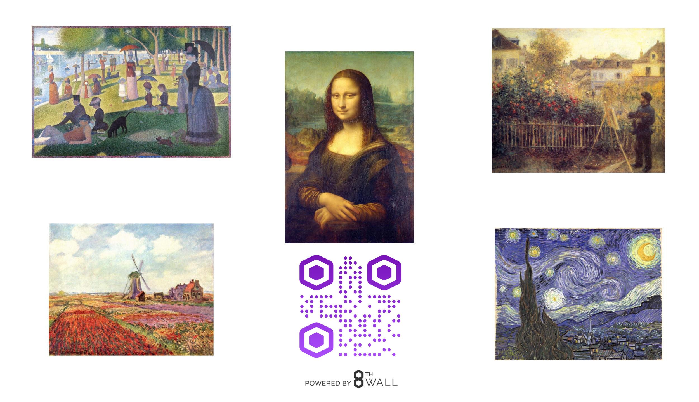

<script src="https://aframe.io/releases/0.5.0/aframe.min.js"></script>

<script>
AFRAME.registerComponent('scale-on-click', {
　schema: {
　　to: {default: '2 2 2'}
　},
　init: function () {
　　var data = this.data;
　　this.el.addEventListener('click', function () {
　　this.setAttribute('scale', data.to);
　　});
　}
});
</script>

<a-scene fog="type: linear; color: #AAA">
    <a-assets timeout="10000">
        
        <audio id="click-sound" src="audio/camera-shutter.mp3">
        <video id="mov" src="/Users/karinkiho/Pictures/0629.mov">
        <a-asset-item id="tree-obj" src="/path/to/tree.obj"></a-asset-item>
        <video id="antarctica" autoplay loop="true" src="/Users/karinkiho/Pictures/0629.mov"></video>
    </a-assets>
    <a-cylinder position="1 0.75 -3" radius="0.5" height="1.5" color="#FFC65D"></a-cylinder>
    <a-videosphere src="#antarctica"></a-videosphere>
    <a-plane position="0 0 -4" rotation="-90 0 0" width="4" height="4" color="#7BC8A4" sound="on: click; src: #click-sound" scale-on-click="to: 0.5 1 1"></a-plane>
    <a-plane position="2 0 -2" rotation="-90 0 0" width="4" height="4" color="#008b8b" material="shader: flat; src: #texture"></a-plane>
    <a-box color="#FFF" width="2" height="2" depth="2" position="-1 0 -3" rotation="0 -45 0" src="#texture" scale-on-click="to: 0.5 1 1">
        <a-animation attribute="rotation" begin="2000" easing="ease-in" repeat="indefinite" to="0 360 0" from="white" to="red"></a-animation>
    </a-box>

    <a-entity id="fading-cube" geometry="primitive: box" material="opacity: 1">
        　<a-animation attribute="material.opacity" begin="fade" to="0"></a-animation>
    </a-entity>

    <a-light type="spot" color="#FFF" position="-20 0 0" look-at="a-box"><</a-light>
    <a-light type="point" color="#AAA" position="0 5 0"></a-light>

    <a-sky color="skyblue"></a-sky>

    <a-camera position="0 1.8 0">
        <a-cursor color="#2E3A87"><</a-cursor>
    </a-camera>


</a-scene>